A preliminary design tool for sailboats
SailPy is an opensource Python application for conceptual sailboat design with an object-oriented approach. The sailboat is simulated in different conditions, to which optimization tools are applied to evaluate its performance, assisting the definition of the best set of dimensions in order to meet the user's needs. This library encourages suggestions, new features, improvements, and report of bugs. The scripts and issues being discussed can be found at the GitHub page linked in the page bottom.